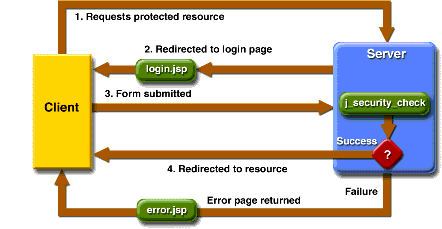
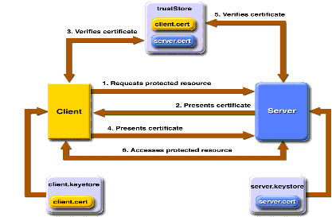
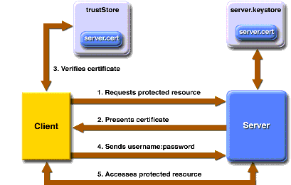
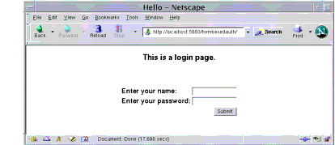
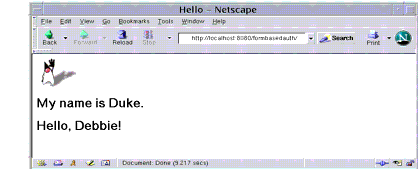

Understanding Login Authentication
When you try to access a protected web resource, the web container activates the authentication mechanism that has been configured for that resource. You can specify the following authentication mechanisms:
If you do not specify one of these mechanisms, the user will not be authenticated.
Using HTTP Basic Authentication
Figure 32-2 shows what happens if you specify HTTP basic authentication.

Figure 32-2 HTTP Basic Authentication
With basic authentication, the following things occur:
HTTP basic authentication is not particularly secure. Basic authentication sends user names and passwords over the Internet as text that is uu-encoded (Unix-to-Unix encoded) but not encrypted. This form of authentication, which uses Base64 encoding, can expose your user names and passwords unless all connections are over SSL. If someone can intercept the transmission, the user name and password information can easily be decoded.
Example: Basic Authentication with JAX-RPC is an example application that uses HTTP basic authentication in a JAX-RPC service.
Using Form-Based Authentication
Figure 32-3 shows what happens if you specify form-based authentication, in which you can customize the login screen and error pages that an HTTP browser presents to the end user.

Figure 32-3 Form-Based Authentication
With form-based authentication, the following things occur:
- A client requests access to a protected resource.
- If the client is unauthenticated, the server redirects the client to a login page.
- The client submits the login form to the server.
- If the login succeeds, the server redirects the client to the resource. If the login fails, the client is redirected to an error page.
Form-based authentication is not particularly secure. In form-based authentication, the content of the user dialog box is sent as plain text, and the target server is not authenticated. This form of authentication can expose your user names and passwords unless all connections are over SSL. If someone can intercept the transmission, the user name and password information can easily be decoded.
Example: Using Form-Based Authentication is an example application that uses form-based authentication.
Using Client-Certificate Authentication
Client-certificate authentication is a more secure method of authentication than either basic or form-based authentication. It uses HTTP over SSL, in which the server and, optionally, the client authenticate one another using public key certificates. Secure Socket Layer (SSL) provides data encryption, server authentication, message integrity, and optional client authentication for a TCP/IP connection. You can think of a public key certificate as the digital equivalent of a passport. It is issued by a trusted organization, which is called a certificate authority (CA), and provides identification for the bearer.
If you specify client-certificate authentication, the web server will authenticate the client using the client's X.509 certificate, a public key certificate that conforms to a standard that is defined by X.509 Public Key Infrastructure (PKI). Before running an application that uses SSL, you must configure SSL support on the server (see Installing and Configuring SSL Support) and set up the public key certificate (see Understanding Digital Certificates).
Example: Client-Certificate Authentication over HTTP/SSL with JAX-RPC describes an example application that uses client-certificate authentication.
Using Mutual Authentication
With mutual authentication, the server and the client authenticate each other. There are two types of mutual authentication:
- Certificate-based mutual authentication (see Figure 32-4)
- User name- and password-based mutual authentication (see Figure 32-5)
Figure 32-4 shows what occurs during certificate-based mutual authentication.

Figure 32-4 Certificate-Based Mutual Authentication
In certificate-based mutual authentication, the following things occur:
- A client requests access to a protected resource.
- The web server presents its certificate to the client.
- The client verifies the server's certificate.
- If successful, the client sends its certificate to the server.
- The server verifies the client's credentials.
- If successful, the server grants access to the protected resource requested by the client.
Example: Client-Certificate Authentication over HTTP/SSL with JAX-RPC describes an example application that uses certificate-based mutual authentication.
Figure 32-5 shows what occurs during user name- and password-based mutual authentication.

Figure 32-5 User Name- and Password-Based Mutual Authentication
In user name- and password-based mutual authentication, the following things occur:
- A client requests access to a protected resource.
- The web server presents its certificate to the client.
- The client verifies the server's certificate.
- If successful, the client sends its user name and password to the server, which verifies the client's credentials.
- If the verification is successful, the server grants access to the protected resource requested by the client.
Using Digest Authentication
Like HTTP basic authentication, HTTP digest authentication authenticates a user based on a user name and a password. However, the authentication is performed by transmitting the password in an encrypted form which is much more secure than the simple base64 encoding used by basic authentication. Digest authentication is not currently in widespread use, therefore, there is no further discussion of it in this document.
Configuring Authentication
To configure the authentication mechanism that the web resources in a WAR will use, select the WAR in the
deploytooltree. Select the Security tabbed pane, and then proceed as follows:
- Select one of the user authentication methods described earlier.
- Specify a security realm. If omitted, the
filerealm is assumed. Select the Settings button beside the User Authentication Mechanism field to specify the realm.- If the authentication method is specified as form-based, specify a form login page and form error page. Select the Settings button beside the User Authentication Mechanism field to specify the login page and the error page to be used for form-based authentication.
Example: Using Form-Based Authentication
In this section, we discuss how to add form-based authentication to a basic JSP page. With form-based authentication, you can customize the login screen and error pages that are presented to the web client for authentication of their user name and password. If the topic of authentication is new to you, please refer to the section Understanding Login Authentication.
The example application discussed in this tutorial can be found in
<INSTALL>/j2eetutorial14/examples/security/formbasedauth/. In general, the following steps are necessary to add form-based authentication to a web client. In the example application included with this tutorial, most of these steps have been completed for you and are listed here to show what needs to be done should you wish to create a similar application.
- Map the role name to the appropriate users and groups defined for the Application Server. See Adding Authorized Users for more information on needed modifications.
- Edit the
build.propertiesfile. Thebuild.propertiesfile needs to be modified because the properties in this file are specific to your installation of the Application Server and J2EE 1.4 Tutorial. See Building the Examples for information on which properties need to be set.- Create the web client. For this example, the web client, a very simple JSP page, is already created. The client is discussed in Creating a Web Client for Form-Based Authentication.
- Create the login form and login error form pages. For this example, these files are already created. These pages are discussed in Creating the Login Form and Error Page.
- Add the appropriate security elements using
deploytool. See Specifying Security Elements for Form-Based Authentication for information on which settings need to be made.- Build, package, deploy, and run the web application (see Building, Packaging, Deploying, and Running the Form-Based Authentication Example). You will use the
asanttool to compile the example application and to run the client. You will usedeploytoolto package and deploy the server.Adding Authorized Users
This example application will be configured to authorize access for users assigned to the role of
loginUser. To specify which users can assume that role and can access the protected parts of the application, you must map this role to users and groups defined for the Application Server.When the Application Server is started, it reads the settings in its configuration files. When a constrained resource is accessed, the Application Server verifies that the user name and password are authorized to access that resource before granting access to the requester. The roles that are authorized to access a resource are specified in the security constraint for that application.
Information for adding users to the Application Server is provided in Managing Users. For this example, create a new user and assign that user to the group
loginUser. For information about the steps required to map the user assigned to the group ofloginUseras defined on the Application Server to the role ofloginUserauthorized to access this application, see Mapping Roles to Users and Groups.Creating a Web Client for Form-Based Authentication
The web client is a standard JSP page. None of the code that adds form-based authentication to the example is included in the web client. The information that adds the form-based authentication to this example is specified in the deployment descriptor, which is created with
deploytool. The code for the JSP page used in this example,formbasedauth/web/index.jsp, is listed next. The running application is shown later in Figure 32-7.<html> <head><title>Hello</title></head> <body bgcolor="white"> <img src="duke.waving.gif"> <h2>My name is Duke.</h2> <h2><font color="black">Hello, ${pageContext.request.userPrincipal.name}!</font></h2> </body> </html>Creating the Login Form and Error Page
When you create a form-based login mechanism, you must specify which JSP page contains the form to obtain the user name and password to verify access. You also must specify which page is displayed if login authentication fails. This section discusses how to create the login form and error page. Packaging the Web Application discusses how to specify these pages when you are setting up form-based authentication.
The login page can be an HTML page, a JSP page, or a servlet, and it must return an HTML page containing a form that conforms to specific naming conventions (see the Java Servlet 2.4 specification for more information on these requirements). The content of the login form in an HTML page, JSP page, or servlet for a login page should be coded as follows:
<form method=post action="j_security_check" > <input type="text" name= "j_username" > <input type="password" name= "j_password" > </form>The full code for the login page used in this example can be found at
<INSTALL>/j2eetutorial14/examples/security/formbasedauth/web/logon.jsp. An example of the running login form page is shown later in Figure 32-6.The login error page is displayed if the user enters a user name and password combination that is not authorized to access the protected URI. For this example, the login error page can be found at
<INSTALL>/j2eetutorial14/examples/security/formbasedauth/web/logonError.jsp. Here is the code for this page:<%@ taglib uri="http://java.sun.com/jsp/jstl/core" prefix="c" %> <html> <head> <title> Login Error </title> </head> <body> <c:url var="url" value="/index.jsp"/> <p><a href="${url}">Try again.</a></p> </body> </html>Specifying Security Elements for Form-Based Authentication
To enable form-based authentication, you add the following elements to this application using
deploytool.
- A security constraint, which is used to define the access privileges to a collection of resources using their URL mapping.
- A web resource collection, which is used to identify a subset of the resources within a web application to which a security constraint applies. In this example, by specifying a URL pattern of
/*, we are specifying that all resources in this application are protected.- An authorized roles list, which indicates the user roles that should be permitted access to this resource collection. In this example, it is users assigned the role of
loginUser. If no role name is provided, no user is allowed to access the portion of the web application described by the security constraint.- A user authentication method, which is used to configure the authentication method used and the attributes needed by the form login mechanism. The login page parameter provides the URI of a web resource relative to the document root that will be used to authenticate the user. The error page parameter requires a URI of a web resource relative to the document root that sends a response when authentication has failed.
In the Application Server, these security elements are added to the application using
deploytool, after the application has been packaged. Information on adding the security elements to this application usingdeploytoolis discussed in Packaging the Web Application.Building, Packaging, Deploying, and Running the Form-Based Authentication Example
To build, package, deploy, and run the
security/formbasedauthexample, which uses form-based authentication, follow these steps.Building the Form-Based Authentication Example
- Follow the instructions in Building the Examples.
- Follow the instructions in Adding Authorized Users.
- Go to the
<INSTALL>/j2eetutorial14/examples/security/formbasedauth/directory.- Build the web application by entering the following command at the terminal window or command prompt:
asant buildPackaging the Web Application
You can package the form-based authentication example using
asantordeploytool, or you can just open the WAR file located in the<INSTALL>/j2eetutorial14/examples/security/provided-wars/formbasedauth.warfile.To package the example using
asant, run the following command:To package the example using
deploytool, follow these steps:
- Start the Application Server if you have not already done so. For information on starting the Application Server, see Starting and Stopping the Application Server.
- Start
deploytool. Information on startingdeploytoolcan be found in Starting the deploytool Utility.- Package the
formbasedauthexample usingdeploytoolfollowing these steps. More detail on packaging web applications can be found in Packaging Web Modules.
- Select File
New
deploytoolmenu.- Select Next from the Introduction page.
- Select the Create New Stand-Alone WAR Module radio button.
- In the WAR File field, browse to the
<INSTALL>/j2eetutorial14/examples/security/formbasedauth/directory and create the fileformbasedauth.war.- Enter
/formbasedauthin the Context Root field.- Click Edit Contents to add the contents of the application to the WAR file. Select the
formbasedauth/directory from the Starting Directory list. Select each of the filesindex.jsp,logon.jsp,logonError.jsp, andduke.waving.giffrom thebuild/directory, and then click Add. Click OK to close this dialog box.- Click Next.
- Select JSP Page.
- Click Next.
- Select
index.jspin the JSP Filename field.- Click Next.
- Click Finish. The
FormBasedAuthexample displays in thedeploytooltree.- Select Save from the File menu to save the web component.
To add form-based authentication to your application, select the
formbasedauthexample in thedeploytooltree and then follow these steps:
- Select the Security tabbed pane.
- Select
Form Basedin the User Authentication Method field.- Select the Settings button. Set the following properties in this dialog box:
- Select Add Constraints to add a security constraint to this example.
- Select Add Collections to add a web resource collection to this example.
- With the security constraint and web resource collection selected, click the Edit Collections button.
- In the Edit Contents dialog box, select Add URL Pattern. In the edit box, make sure that the URL pattern reads
/*. Click OK to close this dialog box. Using a URL pattern of/*and selecting no HTTP patterns means that all files and methods in this application are protected and may be accessed only by a user who provides an authorized login.- Click OK.
- Click Edit Roles on the Security tabbed pane and then Edit Roles again in the Authorized Roles dialog box. Click Add, and then enter the role
loginUserin the Name column. This is the authorized role for this security constraint. Click OK to close this dialog box.- Select
loginUserin the left pane and click Add to add it to the list of authorized roles for this application. Select OK to close this dialog box.The next step is to map the authorized role of
loginUser, as defined in the application, to the group ofloginUserthat is defined for the Application Server. To do this, follow these steps:
- Select the General tabbed pane.
- Click the Sun-specific Settings button.
- In the Sun-specific Settings dialog box, select User to Role Mappings from the View list.
- Select
loginUserfrom the list of roles.- Click the Edit button under the Groups box.
- Connect to the Admin Server when prompted by entering your admin user name and password if you have not already done so. Connecting to the Admin Server will enable
deploytoolto read the names of the users and groups that are currently defined in thefilerealm on the server.- Select
loginUserfrom the Available Groups list, and then click the Add button to map the role ofloginUser(defined for the application) to the group ofloginUser(defined for the Application Server). Click OK.- Click Close to return to the General tabbed pane.
- Select File
After all the security elements have been added, view the generated deployment descriptor by selecting Tools
deploytoolmenu.Deploying the Web Application
To deploy the example using
asant, run the following command:To deploy the example using
deploytool, follow these steps:Running the Web Application
Run the web client by entering the following URL in your web browser:
The login form displays in the browser, as shown in Figure 32-6. Enter a user name and password combination that corresponds to the role of
loginUser, and then click the Submit button. Form-based authentication is case-sensitive for both the user name and password.

Figure 32-6 Form-Based Login Page
If you entered
Debbieas the name and if there is a user defined for the Application Server with the user name ofDebbiethat also matches the password you entered and is assigned to the group ofloginUserthat we mapped to the role ofloginUser, the display will appear as in Figure 32-7.

Figure 32-7 The Running Form-Based Authentication Example
Note: For repetitive testing of this example, you may need to close and reopen your browser.
Using Authentication with SSL
Passwords are not protected for confidentiality with HTTP basic or form-based authentication, meaning that passwords sent between a client and a server on an unprotected session can be viewed and intercepted by third parties. To overcome this limitation, you can run these authentication protocols over an SSL-protected session and ensure that all message content is protected for confidentiality. To configure HTTP basic or form-based authentication over SSL, follow these steps.
- Select the WAR in the
deploytooltree.- Select the Security tabbed pane.
- Specify
CONFIDENTIALorINTEGRALas the network security requirement on the WAR's Security pane indeploytool.
- Specify
NONEwhen the application does not require a security constraint.- Specify
CONFIDENTIALwhen the application requires that data be transmitted so as to prevent other entities from observing the contents of the transmission.- Specify
INTEGRALwhen the application requires that the data be sent between client and server in such a way that it cannot be changed in transit.Read the section Specifying a Secure Connection for more information.
- Select Save from the File menu to save the changes.
- Select Deploy from the Tools menu and follow the steps to deploy the application.
- Load the application in a web browser using
httpsfor the protocol, the HTTPS port that you specified during installation for the port (by default this port is 8181), and the context name for the application you wish to run. For the form-based authentication example, you could run the example using the following URL:
https://localhost:8181/formbasedauth
All of the material in The J2EE(TM) 1.4 Tutorial is copyright-protected and may not be published in other works without express written permission from Sun Microsystems.